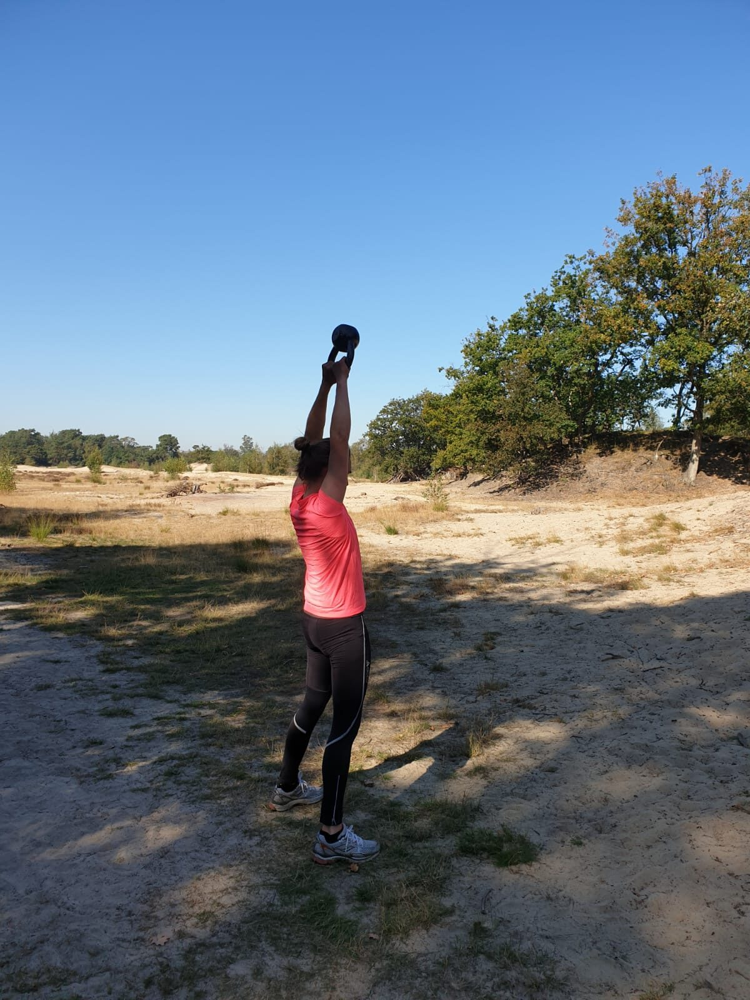

Personal training is een uitstekende manier om je gezondheid en fitheid naar een hoger niveau te tillen. Of je nu sterker wilt worden, je conditie wilt verbeteren of een specifiek gezondheidsdoel wilt bereiken: een personal trainer kan je daarbij helpen. In Nederland zijn er tal van personal trainers, maar hoe vind je nu de trainer of trainster die het beste past bij jouw situatie, wensen en doelen? In dit artikel helpen we je een weloverwogen keuze te maken, zodat je niet alleen resultaten boekt, maar ook plezier hebt tijdens je trainingen.
- Wat maakt een personal trainer de beste keuze voor jou?
- Hoe vind je de personal trainer die bij jou past?
- Veelgemaakte fouten bij het kiezen
- Ervaringen van anderen
- Uitgelicht: LET'S DO IT Personal Training
- Uitgelicht: YourHealth Personal Training
- Derde optie: Jouw Personal Trainer aan Huis
- Conclusie
- Veelgestelde vragen
Wat maakt een personal trainer de beste keuze voor jou?
Er zijn verschillende factoren die een goede personal trainer onderscheiden van de rest. Het gaat niet alleen om ervaring en kennis, maar ook om hoe goed iemand zich kan afstemmen op jouw specifieke behoeften en voorkeuren.
Ervaring en expertise
Een goede personal trainer heeft jarenlange ervaring en een gedegen opleiding. Ze begrijpen niet alleen hoe ze je helpen om fysieke doelen te bereiken, maar ook hoe ze je lichaam ondersteunen bij het voorkomen van blessures. Voor vrouwen komt daar iets bij: kennis van de menstruatiecyclus, zwangerschap, postpartum herstel en de overgang. Die fases hebben allemaal invloed op hoe je het beste traint.
Maatwerk en persoonlijke aanpak
De beste personal trainers begrijpen dat iedereen uniek is. Ze stellen een plan op dat specifiek gericht is op jouw wensen, doelen en huidige conditie. Dat maatwerk zorgt ervoor dat je op de juiste manier wordt uitgedaagd en gemotiveerd, zonder overbelasting.
Communicatie en motivatie
Een goede trainer is meer dan een begeleider van oefeningen. Die luistert naar je, begrijpt je doelen en weet je te motiveren, ook buiten de training om, bijvoorbeeld met hulp bij je voeding en leefstijlkeuzes. Veel vrouwen merken bovendien dat ze zich vrijer voelen bij een trainer bij wie ze zich op hun gemak voelen; de klik is minstens zo belangrijk als het cv.
Flexibiliteit in locatie en tijden
Een personal trainer die bij jouw agenda en leefstijl past, biedt de flexibiliteit om te trainen waar en wanneer jij wilt. Thuis, in de tuin, in het park of op je werk: personal training aan huis scheelt reistijd, drempelvrees en gedoe met oppas.
Hoe vind je de personal trainer die bij jou past?
Het vinden van de juiste personal trainer begint met het helder krijgen van je eigen wensen en doelen. Doorloop daarna deze stappen.
- Bepaal je doelen. Wil je afvallen, spieren opbouwen, je conditie verbeteren of werken aan specifieke klachten? Hoe concreter je doel, hoe gerichter je kunt zoeken naar een trainer met de juiste ervaring.
- Kies de juiste locatie. Train je liever in de privacy van je eigen huis of geniet je van de buitenlucht? Kies een aanbieder die traint op de plek waar jij je comfortabel voelt.
- Bekijk de specialisaties. Zoek een trainer met aantoonbare ervaring in wat jij nodig hebt: krachttraining, herstel na een blessure, zwangerschap of de overgang. Geef je voorkeur aan bij de intake.
- Vraag een proefles aan. Dé manier om te ervaren of er een klik is, zonder langdurige verplichting. Serieuze aanbieders bieden altijd een intake met proefles aan.
- Vergelijk tarieven en flexibiliteit. Kijk niet alleen naar het uurtarief, maar ook naar de vorm: strippenkaarten geven meer vrijheid dan abonnementen, en bij sommige aanbieders traint een tweede persoon gratis mee.
Veelgemaakte fouten bij het kiezen van een personal trainer
| Fout | Oplossing |
|---|---|
| Geen duidelijke doelen stellen | Maak van tevoren concreet wat je wilt bereiken |
| Alleen op prijs kiezen | Weeg klik, specialisatie en flexibiliteit net zo zwaar mee |
| Te snel te veel willen | Begin rustig en bouw de intensiteit geleidelijk op |
| Onrealistische verwachtingen | Wees realistisch over je doelen en tijdlijn; duurzaam wint van snel |
| Geen proefles doen | Plan altijd eerst een kennismaking voordat je een pakket afneemt |
Ervaringen van anderen
"Na maandenlang proberen om fit te worden, heb ik eindelijk de juiste trainer gevonden. Ze hielp me niet alleen fysiek sterker te worden, maar ook mentaal. Ik voel me nu veel beter in mijn vel!" – Marieke (33)
"Ik had nooit gedacht dat trainen zo leuk kon zijn. Mijn trainster zorgde voor variatie in de sessies en daagde me elke keer uit om mijn grenzen te verleggen." – Sandra (47)
"Ik heb heel lang gewacht met het inplannen van een proefles, maar het was het beste besluit ooit. Mijn trainer gaf me de motivatie die ik nodig had." – Emma (28)
Tot zover de theorie. Maar bij wie kun je nu concreet terecht? Wij bekeken het aanbod in Nederland door de bril van vrouwen die aan huis of buiten willen trainen. Drie aanbieders vallen op, elk met een eigen sterk profiel.

Uitgelicht: LET'S DO IT Personal Training – vóór vrouwen, dóór vrouwen
Wil je per se met een vrouwelijke trainster werken? Dan is LET'S DO IT Personal Training de meest logische plek om te beginnen. Deze aanbieder specialiseerde zich als eerste in Nederland in personal training aan huis en buiten speciaal vóór vrouwen, dóór vrouwen, en doet dat al sinds 2007.
Wat LET'S DO IT onderscheidt:
- Ruim 80 vrouwelijke trainsters, elk met een eigen specialisatie: van personal boxing, HIIT en bootcamp tot yoga en pilates.
- Vrouwspecifieke kennis. De trainsters houden rekening met je menstruatiecyclus, een eventuele zwangerschap of hormonale disbalans zoals de overgang.
- Specialisaties per levensfase: trainen tijdens de zwangerschap, postpartum herstel, 40+ en de overgang.
- Vertrouwde setting. Je traint thuis of buiten in je eigen buurt; veel vrouwen geven aan zich bij een trainster minder snel te schamen en zich beter begrepen te voelen.
- Praktisch geregeld: 7 dagen per week van 06:30 tot 22:00, een tweede persoon traint gratis mee, gratis leefstijlwerkboek en een app met 3D-oefenvideo's en trainingsschema's voor thuis.
De toon is nuchter en persoonlijk: geen afzien om het afzien, maar een stok achter de deur die ervoor zorgt dat sporten (weer) leuk wordt. Voor de meeste vrouwen die dit artikel lezen is dit de logische eerste kennismaking.
Uitgelicht: YourHealth Personal Training – het grootste aanbod
Zoek je vooral keuze en flexibiliteit, dan is YourHealth Personal Training een sterke kandidaat. Oprichter Dennis van Leeuwen, sinds 1996 actief in de fitnessbranche, startte YourHealth in 2007 en was daarmee een van de eersten in Nederland die personal training aan huis verzorgde. Inmiddels is het uitgegroeid tot het grootste platform voor personal training aan huis van Nederland.
Wat YourHealth onderscheidt:
- Meer dan 100 trainers (m/v) met uiteenlopende specialismen: medical trainers, bokstrainers, zwanger-en-fit trainers, yoga- en pilatesdocenten en zelfs fysiotherapeuten en diëtisten in het netwerk.
- Flexibele strippenkaarten van 15 tot 200 sessies, 6 tot 62 maanden geldig, met uurtarieven tussen €65 en €85. Geen abonnement, geen administratiekosten.
- Veel trainingsvormen: van krachttraining en HIIT tot personal boxing, duo-training, medische training en bedrijfsfitness.
- Sterke extra's: gratis leefstijlwerkboek, gratis trainingsschema's met 3D-video's in de app, gratis receptenboek met 125 recepten en weekmenu's op maat vanaf €7,90 per maand.
- Ruim beschikbaar: 7 dagen per week van 06:30 tot 22:00 in Noord-Holland, Zuid-Holland, Utrecht en delen van Gelderland en Brabant. Een tweede persoon traint gratis mee en de kosten zijn voor ondernemers eventueel fiscaal aftrekbaar.
Door de omvang van het team is vrijwel elke gerichte aanpak mogelijk, en vrouwen die liever met een vrouwelijke trainer werken kunnen dat gewoon aangeven. Wie eerst wil proeven, krijgt bij serieuze interesse een intake met proefles.
Derde optie: Jouw Personal Trainer aan Huis – sterk voor 40+, 50+ en herstel
Ben je de veertig of vijftig gepasseerd en merk je dat je lichaam andere behoeften heeft dan tien jaar geleden? Of kom je terug na een blessure of een lange periode zonder sport? Dan verdient Jouw Personal Trainer aan Huis een plek op je shortlist.
- Geleidelijke, opbouwende benadering waarin belastbaarheid, blessures en bewegingskwaliteit centraal staan.
- Medische kennis in het team: naast trainers ook fysiotherapeuten, manueel therapeuten en leefstijlcoaches.
- Focus op kracht, balans en mobiliteit: precies de drie pijlers die het sterkst samenhangen met fit ouder worden.
- Door heel Nederland, zonder abonnement, en je partner traint gratis mee.
Thuis trainen verlaagt bovendien de drempel: geen drukke sportschool, geen reistijd en geen schaamte bij opnieuw beginnen. Juist voor deze doelgroep is dat vaak het verschil tussen starten en blijven uitstellen.
Conclusie: welke personal trainer past bij jou?
De beste personal trainer voor vrouwen is herkenbaar aan een duidelijke intake, een plan dat logisch opbouwt en coaching die veilig blijft. Daarbinnen heeft elke aanbieder een eigen kracht. LET'S DO IT is sterk door de vrouwgerichte aanpak met uitsluitend vrouwelijke trainsters, een vertrouwde setting en begeleiding die aansluit bij elke levensfase van de vrouw. YourHealth is sterk door de brede keuze, het grote team, de flexibiliteit met strippenkaarten en de vele extra's rondom leefstijl en thuisschema's. Jouw Personal Trainer aan Huis is de logische keuze voor 40- en 50-plussers en iedereen die verstandig wil (her)starten na klachten.
Twijfel je? Plan bij één of twee aanbieders een intake met proefles. Je merkt vanzelf waar de klik zit, en die klik is uiteindelijk de beste voorspeller van resultaat.
Veelgestelde vragen en antwoorden
Wat maakt een personal trainer geschikt voor mij?
Ervaring met jouw specifieke doelen, het vermogen zich aan te passen aan jouw niveau en situatie, goed kunnen luisteren en maatwerk leveren. Voor vrouwen komt daar kennis van cyclus, zwangerschap en overgang bij.
Hoe bepaal ik welke personal trainer het beste bij mij past?
Begin met je doelen, kies de locatie waar je wilt trainen, bekijk specialisaties en plan een proefles om de klik te testen.
Wat gebeurt er tijdens een proefles?
Je maakt kennis met de trainer, bespreekt je doelen en verwachtingen en ervaart de aanpak in de praktijk. Vaak vul je vooraf een medische vragenlijst in zodat de les goed voorbereid is.
Hoeveel tijd moet ik investeren?
Veel vrouwen starten met twee sessies per week om in een ritme te komen en bouwen later af naar één sessie plus zelfstandig trainen met een thuisschema. Consistentie is belangrijker dan volume.
Kan ik ook trainen met fysieke klachten of blessures?
Ja, mits je een trainer kiest met ervaring in hersteltraining en je je medische situatie vooraf deelt. Aanbieders met medische trainers of therapeuten in het team zijn dan in het voordeel.
Wat moet ik doen als ik me niet gemotiveerd voel?
Bespreek het met je trainer: die kan het programma aanpassen, kleinere doelen stellen en progressie zichtbaar maken. De vaste wekelijkse afspraak is precies waarvoor je een personal trainer neemt: een stok achter de deur.